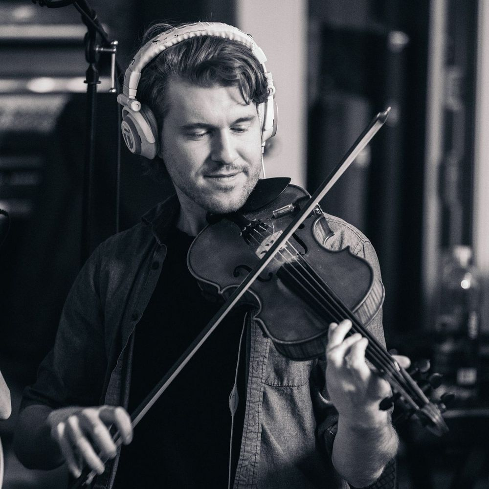

Weddings
Gabriel has been playing weddings for over fifteen years, ranging from playing the ceremony to booking a five piece band for a wedding that lasted for three days. He thoroughly enjoys making them as special and personalized to the clients needs as possible.
Wineries / Restaurants
Gabriel's sonic palate pairs perfectly with any artisanal wine selection, as nothing classes up an atmosphere quite like a string serenade underneath a beautiful summer gazebo. Gabriel plays several times a month at Russian River Vinyards, where you can see, hear and taste for yourself.
Private Events
Anything from a birthday celebration to a memorial service would be well served by Gabriel's music. His stylistic and energetic versatility can ignite a rowdy fiddle barnstorm - or melt into the background for an intimate social gathering.
Contact
Have an upcoming event that you would like to take to the next level? Email gabrielwheaton@gmail.com to discuss needs, logistics and rates.
book now